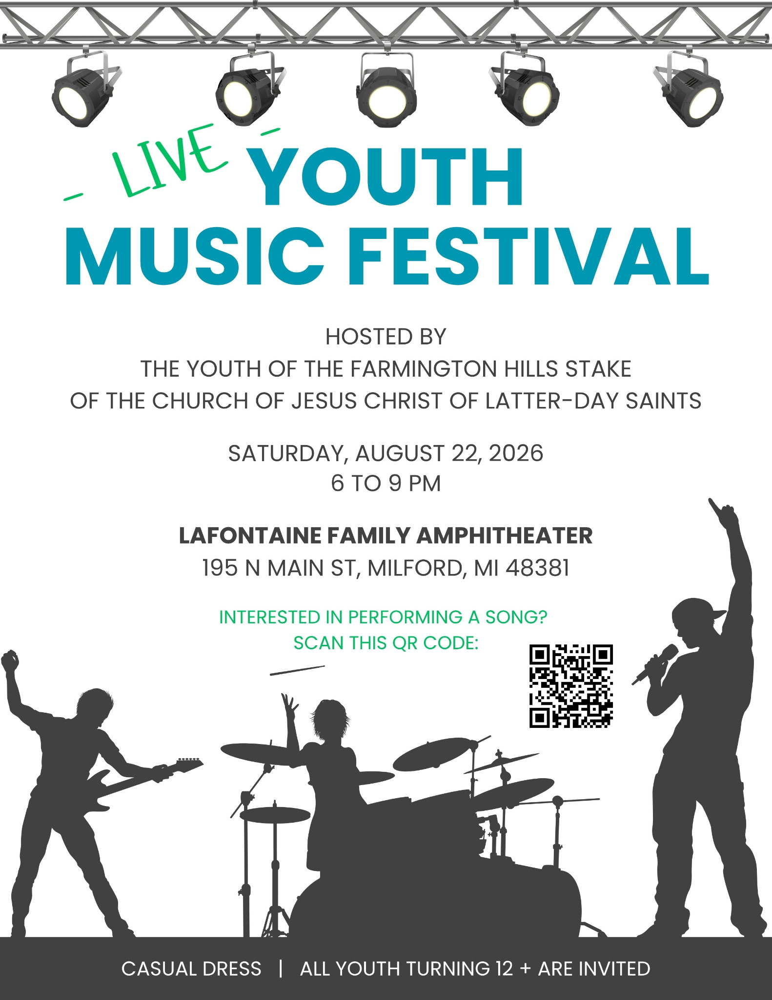
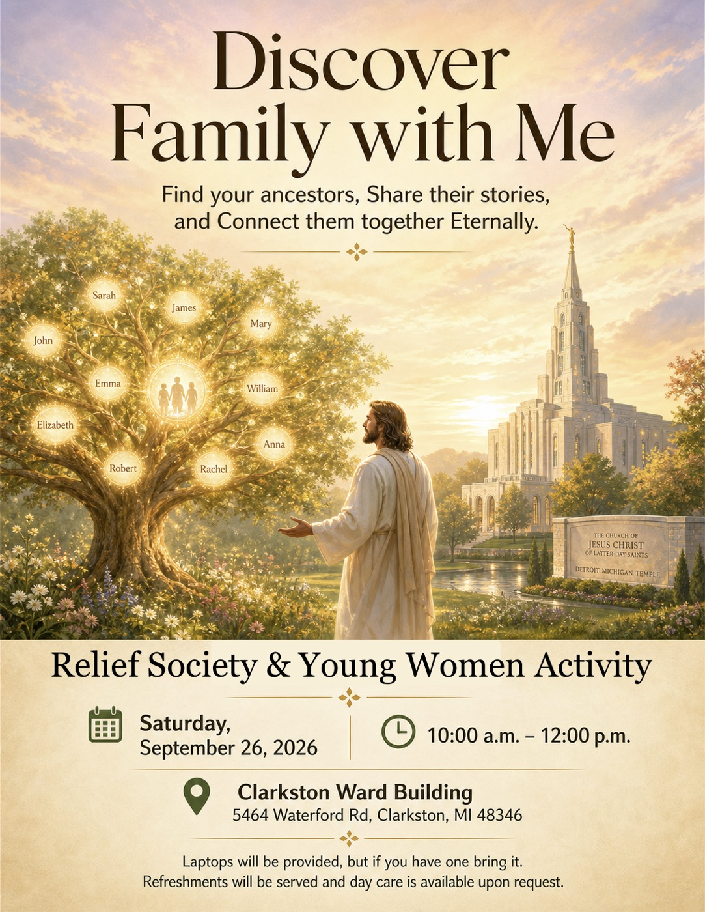
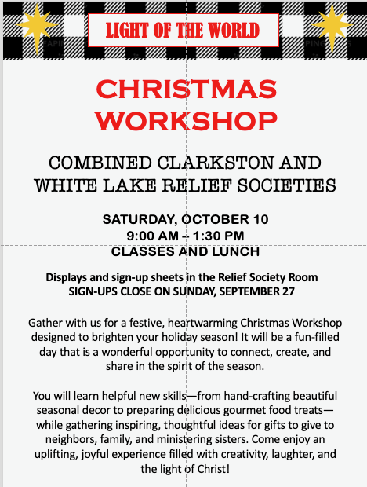
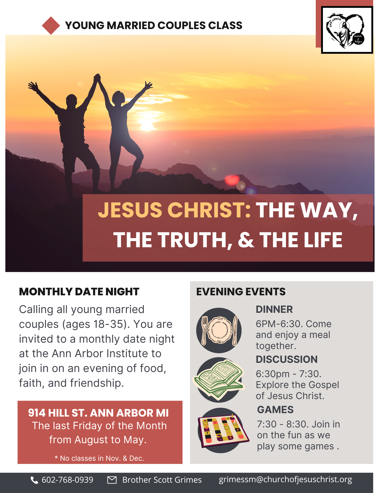

Sacrament Meeting
Sunday, August 23, 2026
Clarkston Ward • Farmington Hills Michigan Stake
9:00 AM – 10:00 AM
Presiding:Bishop Mike Wilson
Chorister:Sis. Laura Allen
Conducting:Bro. Brock Seibold
Pianist:Sister Laura Zundel
| Opening Hymn | #224 I Have Work Enough to Do |
| Invocation | By Invitation |
| Sacrament Hymn | #193 I Stand All Amazed |
| Administration of the Sacrament | |
| Speaker | Bro. Spencer Wilson |
| Speaker | Sis. Ashlynn Majeske |
| Intermediate Hymn | #237 Do What Is Right |
| Speaker | Sis. Kimberly Majewske (Stake YWP) |
| Closing Hymn | #303 Keep the Commandments |
| Benediction | By Invitation |
Building Cleaning — Saturday, September 5, 2026
Harrison
GodfreyBell Z & CZundelWarrenMickleBeanCrisp
Family History & Temple Work Lunch and Learn
Saturday, August 22, 2026, from 10:00 a.m. to 2:00 p.m. at the Farmington Hills Stake Center. The Commerce Ward Temple and Family History Committee invites all Farmington Hills Stake members — beginners and experienced researchers alike. Classes may include first steps in temple and family history, digitizing photos and documents, family spotlights, and family storybooks. Please bring your own lunch and a laptop or tablet with internet access if available.
Ward Temple Night
Beginning this month, Ward Temple Night has been rescheduled to the third Friday of each month (instead of the third Thursday). Come serve together in the house of the Lord.
LIVE Youth Music Festival
Saturday, August 22, 2026, 6:00–9:00 p.m. at the LaFontaine Family Amphitheater, 195 N Main St, Milford, MI. Hosted by Farmington Hills Stake youth. Casual dress. All youth turning 12 and older are invited; friends welcome. Uplifting songs from the youth album, refreshments, and FSY line dancing after.

Sunday Class Schedule Changes – September 2026
Beginning the first week of September 2026, the Sunday class schedule will change. Sacrament meeting continues at 60 minutes, followed by a weekly 25-minute Sunday School class and a 25-minute Elders Quorum, Relief Society, or Young Women meeting. Primary will continue weekly and last 55 minutes.
Relief Society Stake Temple Day
All sisters are invited to the Farmington Hills Stake Relief Society Temple Day on Saturday, September 19, 2026. Watch for the invitation flyer with details, and plan to attend!
Relief Society & Young Women FamilySearch Activity
Saturday, September 26, 2026, from 10:00 a.m. to noon at the Clarkston church building. Young Women and Relief Society join for a morning of discovering family through FamilySearch. Laptops provided; bring your own if you prefer. Daycare: Sis. Leelannee Godfrey or Sis. Nancy Castro.

Light of the World — Relief Society Christmas Workshop
Combined Clarkston and White Lake Wards. Saturday, October 10, 9:00 a.m. to 1:30 p.m. Save the date. More information coming shortly.

Winter Clothing Giveaway
Farmington Hills Stake Center, 33900 13 Mile Rd. Friday, October 16, 2026, 9:00 a.m.–7:00 p.m. (voucher only). Saturday, October 17, 9:00 a.m.–noon (open to the public). Coat drive through September 30 — bring lightly worn coats to church. Sign up to help: https://www.signupgenius.com/go/20F0E49ADA829A1F94-64959790-2026 Vouchers: fh.ward.mi@gmail.com
Young Married Couples Class
Ann Arbor Institute, 914 Hill St. Young married couples ages 18–35. Friday nights August 28, September 25, and October 30: dinner 6:00–6:30, lesson 6:30–7:30, games 7:30–8:30. Contact Brother Scott Grimes, grimessm@churchofjesuschrist.org.

Finding Strength in the Lord — Emotional Resilience Class
Weekly Zoom class beginning Sunday, September 13, 2026, through November 15, 6:30–8:00 p.m. To join, email Sister Rebecca Behrends at sisterrbehrends@gmail.com with name, email, cell, and ward. Course manual required from the Church store.
Keith Erekson — October 10–11
Farmington Hills Stake Center, 33900 Thirteen Mile Rd. Saturday, October 10: Seminary and Institute teacher training 10:00–11:30 a.m., stake leadership training 5:00–6:30 p.m., adult devotional 7:00–8:30 p.m. Sunday, October 11: youth devotional 6:00–7:30 p.m.
DISCOVER — Find out who your family members are.
GATHER — Collect names and information of family members and ancestors and add them to your family tree.
UNITE — Attend the Temple. Unite yourself and your ancestors to the Lord. Seal families together for eternity.
Ward Temple and Family History Leader: Bro. John Tremonti — jtcarwash@comcast.net
- Clarkston Ward Website
local.churchofjesuschrist.org - Ward History
unithistory.churchofjesuschrist.org - Clarkston Ward Facebook
tiny.cc/clarkstonfb - Farmington Hills Stake Facebook
tiny.cc/farmingtonhillsfb - Stake Youth Instagram
@fhstakeyouth - Emergency Action Plan
View Document - Senior Missionary Opportunities
Senior Missionary Site